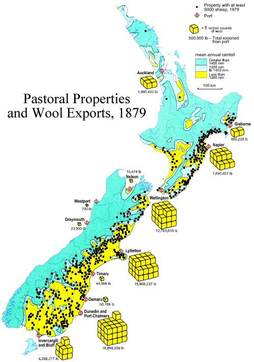

Multiple simple graphs
It is easy to confuse the reader by incorporating too much information in a graphic, but simple graphics can sometimes be combined in rich ways that encourage the reader to investigate the relationships between different measurements.
When planning any such diagram, critically consider whether it may be too complex to be easily understood by the intended audience.
New Zealand wool exports in 1879
The following diagram presents information about wool production and exports in New Zealand in 1879. It effectively shows:
The eye is encouraged to investigate the relationship between the location of sheep farms, the climate and ports.
